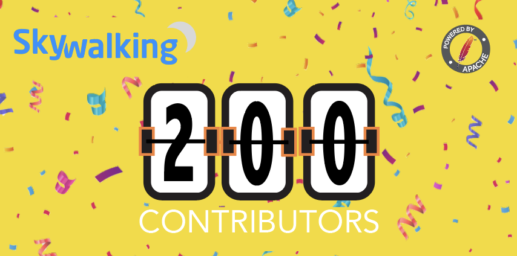

SkyWalking hits 200 contributors mark
- Author: Wu Sheng, tetrate.io, SkyWalking original creator, SkyWalking V.P.
- GitHub, Twitter, Linkedin

The SkyWalking project provides distributed tracing, topology map analysis, service mesh telemetry analysis, metrics analysis and a super cool visualization targeting distributed systems in k8s or traditional VM deployments.
The project is widely used in Alibaba, Huawei, Tencent, DiDi, xiaomi, Pingan, China’s top 3 telecom companies (China Mobile, China telecom, China Unicom), airlines, banks and more. It has over 140 company users listed on our powered by page.
Today, we welcome and celebrate reaching 200 code contributors on our main repo. We hereby mark this milestone as official today, : Jan. 20th 2020.
At this great moment, I would like to share SkyWalking’s 4-year open source journey.
I wrote the first line on Nov. 1st, 2015, guiding people to understand a distributed system just as micro-services and distributed architecture were becoming popular. In the first 2 years, I never thought it would become such a big and active community. I didn’t even expect it would be an open source project. Initially, the goal was primarily to teach others about distributed tracing and analysis.
It was a typical open source project in obscurity in its first two years. But people still showed up, asked questions, and tried to improve the project. I got several invitations to share the project at local meetups.All these made me realize people really needed a good open source APM project.
In 2017, I decided to dedicate myself as much as possible to make the project successful, and it became my day job. To be honest, I had no clue about how to do that; at that time in China, it was rare to have this kind of job. So, I began to ask friends around me, “Do you want to collaborate on the open source APM with me?” Most people were busy and gave a clear NO, but two of them agreed to help: Xin Zhang and Yongsheng Peng. We built SkyWalking 3.x and shared the 3.2 release at GOPS Shanghai, China.
It became the first adoption version used in production
Compared to today’s SkyWalking, it was a toy prototype, but it had the same tracing design, protocol and analysis method.
That year the contributor team was 15-20, and the project had obvious potential to expand. I began to consider bringing the project into a worldwide, top-level open source foundation. Thanks to our initial incubator mentors, Michael Semb Wever, William Jiang, and Luke Han, this really worked. At the end of 2017, SkyWalking joined the Apache Incubator, and kept following the Apache Way to build community. More contributors joined the community.
With more people spending time on the project collaborations, including codes, tests, blogs, conference talks, books and uses of the project, a chemical reaction happens. New developers begin to provide bug fixes, new feature requirements and new proposals. At the moment of graduation in spring 2019, the project had 100 contributors. Now, only 9 months later, it’s surged to 200 super quickly. They enhance the project and extend it to frontiers we never imaged: 5 popular language agents, service mesh adoption, CLI tool, super cool visualization. We are even moving on thread profiling, browser performance and Nginx tracing NOW.
Over the whole 4+ years open source journey, we have had supports from leaders in the tracing open source community around the world, including Adrian Cole, William Jiang, Luke Han, Michael Semb Wever, Ben Sigelman, and Jonah Kowall. And we’ve had critical foundations’ help, especially Apache Software Foundation and the Cloud Native Computing Foundation.
Our contributors also have their support from their employers, including, to the best of my knowledge, Alibaba, Huawei, China Mobile, ke.com, DaoCloud, Lizhi.fm, Yonghui Supermarket, and dangdang.com. I also have support from my employers, tetrate.io, Huawei, and OneAPM.
Thanks to our 200+ contributors and the companies behind them. You make this magic happen.